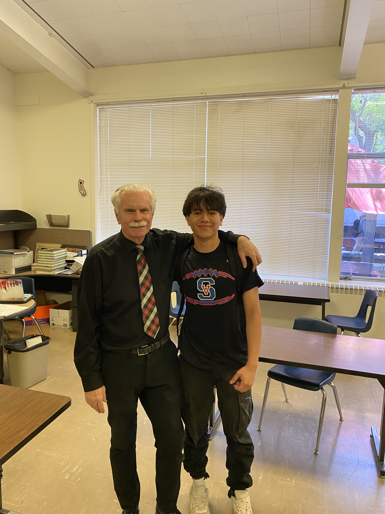

Hobbies & Interests
A mix of creative interests and simple daily rituals that keep me balanced.
-
Intellectual & Creative
- Reading
- Chess
- Making clothes
- Music
-
Active & Exploratory
- Traveling
- Trying new food
- Running
- Gym
-
Daily Rituals
- Drinking matcha

Hometown: Petaluma, CA
Grew up in Petaluma, California, a Sonoma County city known for its historic downtown, strong sense of community, and location between San Francisco and wine country, which helped shape an early appreciation for culture, food, and the outdoors.
High School
Attended Fusion Academy before graduating from Saint Vincent de Paul College Prep in 2024, where I wrestled at the varsity level and competed on the varsity soccer team, building the discipline and athletic mindset I bring into everything I do.

Sport: Boxing
I compete as a boxer under USA Boxing, the national governing body for Olympic style amateur boxing in the United States. With a record of 27 wins and 6 losses, I have built a reputation for discipline, heart, and technical skill in the ring. Boxing has become a core part of who I am, shaping my resilience, focus, and work ethic both in competition and in everyday life.